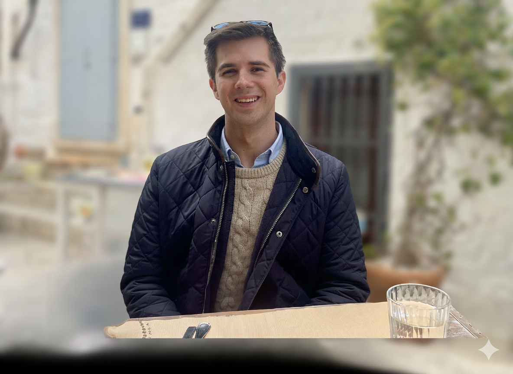
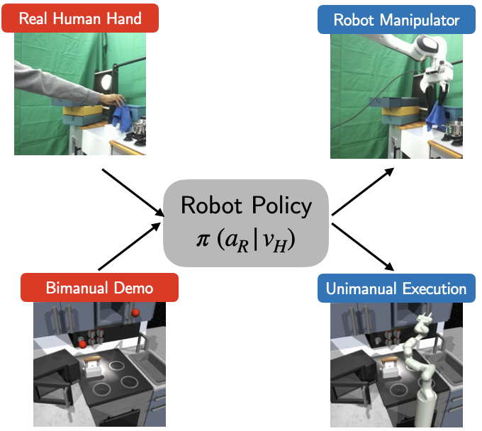
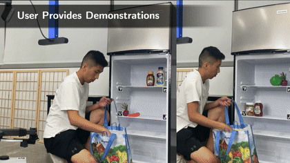

Hey, I'm Max!
MS in Computer Science at Cornell University

I'm a second-year MS student at Cornell University studying AI and robotics. I also did my undergraduate degree at Cornell double majoring in computer science and mathematics. My research at PoRTaL Lab focuses on learning robot skills from human video demonstrations. I'm also very passionate about entrepreneurship and am always looking for new opportunities to build and grow startups. Please feel free to reach out if you would like to talk with me about anything!
Publications

X-Diffusion: Training Diffusion Policies on Cross-Embodiment Human Demonstrations
Maximus Adrian Pace, Prithwish Dan, Chuanruo Ning, Atiksh Bhardwaj, Moyun Du, Edward Duan,
Wei-Chiu Ma,
Kushal Kedia
Under Review at International Conference on Robotics and Automation (ICRA), 2026.[Website]
X-Diffusion co-trains diffusion policies on cross-embodiment
using a classifier to maximally leverage human data without learning infeasible behaviors.
X-Sim: Cross-Embodiment Learning via Real-to-Sim-to-Real
Prithwish Dan, Kushal Kedia, Angela Chao, Edward Duan, Maximus Adrian Pace, Wei-Chiu Ma,
Sanjiban Choudhury
Oral Presentation at 9th Annual Conference on Robot Learning (CoRL), 2025.[Website]
X-Sim learns robot actions from action-less human videos
using an object-centric reward in simulation, bridging the embodiment gap while increasing data
efficiency and generating diverse synthetic data.

One-shot imitation under mismatched execution
Prithwish Dan, Kushal Kedia, Angela Chao, Maximus Adrian Pace, and Sanjiban Choudhury
International Conference on Robotics and Automation (ICRA), 2025. [Website]
RHyME introduces a new framework that enables robots to learn
from watching human demonstrations even when there are differences in execution styles.

APRICOT: Active Preference Learning and Constraint-Aware Task Planning with LLMs
Huaxiaoyue Wang, Nathaniel Chin, Gonzalo Gonzalez-Pumariega, Xiangwan Sun, Neha Sunkara, Maximus
Adrian Pace, Jeannette Bohg, Sanjiban Choudhury
8th Annual Conference on Robot Learning (CoRL), 2024. [Website]
APRICOT combines the generative ability of LLMs with Bayesian
active preference learning, allowing robots to interactively query users to reduce uncertainty.

MOSAIC: A Modular System for Assistive and Interactive Cooking
Huaxiaoyue Wang, Kushal Kedia, Juntao Ren, Rahma Abdullah, Atiksh Bhardwaj, Angela Chao, Kelly Y
Chen, Nathaniel Chin, Prithwish Dan, Xinyi Fan, Gonzalo Gonzalez-Pumariega, Aditya Kompella,
Maximus Adrian Pace, Yash Sharma, Xiangwan Sun, Neha Sunkara, Sanjiban Choudhury
8th Annual Conference on Robot Learning (CoRL), 2024. [Website]
MOSAIC combines large pre-trained models for general tasks
with task-specific modules to enable collaborative cooking.

Video2Demo: Grounding Videos in State-Action Demonstrations
Yash Sharma, Yuki Wang, Kelly Chen, Maximus Pace, Sanjiban Choudhury
Video2Demo combines GPT-4 with vision-language models to
convert human video demonstrations into temporally coherent state-action sequences for robot imitation
learning.